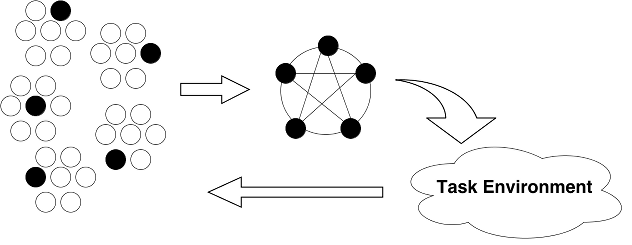

Accelerated Neuro-Evolution on Core Architectures
Edmore Moyo
Supervisors : Michelle Kuttel / Geoff Nitschke
MSc. in Computer Science
7 August 2013
Neuro-evolution (NE)
- is a method for modifying artificial neural network (ANN) connection weights, topologies, or teams, with an Evolutionary
Algorithm (EA), in order for the network to learn a specific task.
- an unsupervised learning approach.
- able to adapt topologies, as well as connection weights for a broad range of ANN types.
In the real world ...
- Some problems require that solutions be found in a relatively short time or in near real time e.g. the use of ANNs for near real time processing of satellite data.
- Whilst others are large neural network applications, with a large number of neurons, that require frequent and lengthy retraining e.g. the use of ANNs for automatic speech recognition.
- Such real world problems can benefit from NE methods.
Drawbacks of NE methods
- Although NE methods have proven to be efficient, their main disadvantage, which is inherent to all evolutionary algorithms, is that they require many trials to find a solution to any non-trivial task.
- NE methods can therefore be computationally intensive for complex tasks.
Cooperative Co-evolution
- is an NE method type.
- multiple populations of solutions are evolved and evaluated together as a means of solving subproblems of a larger complex problem.
- Enforced Subpopulations (ESP) and Mult-Agent ESP are examples.

Research Aims
- The aim of this research is to develop a general, parallel framework that facilitates the parallelisation of cooperative co-evolution NE methods.
- ESP and Multi-Agent ESP will be used as case studies to achieve this aim.
Research Questions
- Is it possible to develop a general, efficient, scalable, parallel framework for cooperative co-evolution NE methods?
- Can the framework be expressed and parallelised using the MapReduce model?
- Can ESP and Multi-Agent ESP be implemented based on this general framework?
Research Approach
- the development of a multicore version of ESP in Go(lang).
- an attempt to express ESP using the MapReduce model.
- a general framework architecture will then be derived.
Testing and Evaluation
- Pole balancing task.
- Prey capture task.
- Serial version vs parallel implementation.
The End
Presented By
Edmore Moyo / @etmoyo / www.edmoremoyo.com
...
Questions?